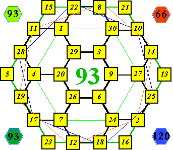
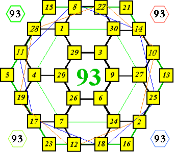
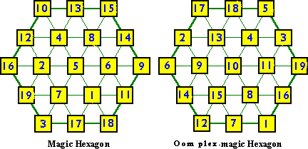
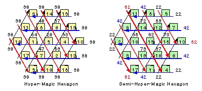
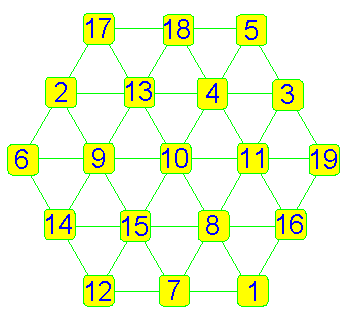
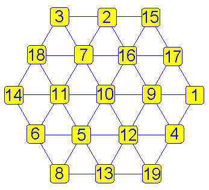

숫자놀이
7.발전형육각진연구
이지원님께서 우리에게 그동안 연구한 육각진 발전형을 보내 왔습니다.
http://www.geocities.com/CapeCanaveral/Launchpad/4057/MoreMsqrs.htm에서
퍼온 육각진를 선를 긋는 육각진의 합도 같도록 만들었습니다.
별로 힘들지 않다고 말할 수도 있지만 기존
방식를 개선시키려는 시도는 아무나 할 수 있는 일이 아니지요.[93]
|
 |
 |
|
첫 번째는 널리 알려진 유일한 선분형 육각진이고[38],  | |
|
 | |
2.그물망형 육각진
그물망형 육각진(Oom
plex-magic Hexagon)이란?
정육각진 내부를 그물형의 숫자자리를 만들어 그 속에서 합을 찾는 것을
말합니다.
이지원님이 발견한 이 형식을 확장이 가능한지 연구해 보려는 의도로 만들었습니다.
다른 경우에도 이런 방식으로 가능한지?
독자 분들의 연구 성과가 있다면 연락 주시기 바랍니다.
1. 그물망형 육각진-정육각진의 합[60]-다른 하나는 역순 배열입니다.
|
 |
 |
좀 더 다양한 방식을 아시는 분은 연락 주시기 바랍니다.